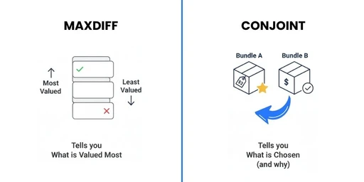

The Brief That Didn't Exist Yet
Bridge the gap between fragmented bank data and actionable financial coaching for employees.
The Mission: Bridge the gap between fragmented bank data and actionable financial coaching for employees.
The Challenge: Build an MVP in 4 weeks, reconciling the v1.3 scoring spec with a dual-layer onboarding experience.
The Role: Lead Product Designer. Managed the end-to-end journey from CTO logic brainstorming to a 200+ screen design system.
Business Impact: Created a scalable B2B2E model designed to maximize employee 401k matches and debt readiness.
The Brief That Didn't Exist Yet
The hardest projects don't start with a brief — they start with a question nobody's asked yet. 28 days, v1.3 scoring engine, zero design brief — just a vision.
I didn't get a design brief. I got a 40-page PRD, a scoring engine already at v1.3, and a product vision ambitious enough to make most designers quietly panic.
Lucid wasn't just a finance app. It was a B2B2E platform — meaning it had to sell to employers, but earn employees. That's two completely different psychological contracts in one interface.
So before I touched Figma, I did something that doesn't show up in most portfolios — I sat with the ambiguity. I read the documentation like an anthropologist, not a designer. I was looking for the human hiding inside the requirements.
And I found it. The real brief was never written down. It was: make people trust a finance app enough to be honest with it. Everything else was detail.
"The brief wasn't missing — it was hiding inside the complexity. My job was excavation, not execution."
200 Screens. 4 Weeks. One North Star.
Velocity without vision is just chaos. This was neither. 200+ screens, 6 flows, 1 system — built through decisions, not speed.
Let me be straight with you — 200 screens in four weeks sounds like a sprint. It wasn't. It was a system.
You produce at that scale by making decisions fast and consistently. Every component, every state, every edge case — each one had to ladder back to that single north star we defined in week one.
The constraint actually became the creative fuel. When you know exactly what you're designing for — trust, clarity, financial confidence — every decision has a filter. Should this tooltip exist? Does it build trust or add noise? Should this screen have two steps or three? Which one respects the user's cognitive load more?
That's how 200 screens happened. Not hustle. Clarity.
And underneath all of it was a design system being built in parallel — because without shared foundations, 200 screens is just 200 opinions.
"Speed at scale isn't about working faster — it's about deciding better."

Designing for Trust in Finance Apps
MaxDiff validated: debt payoff and 401k beat generic tracking every time.
Most finance apps fail before the user even signs up. Not because of bad design — because of bad psychology. People have been burned. Overdraft fees they didn't see coming. Budgeting apps that judged them. Algorithms that felt cold and impersonal.
So when I approached Lucid's onboarding, I asked a question most PRDs don't include: What emotional state is this user in when they open this app for the first time?
The answer was somewhere between cautious and skeptical. And that changes everything — your copy tone, your data asks, your permission moments, even how aggressive your AI recommendations feel.
I explored MaxDiff choice modeling to validate what employees actually prioritized. The result was decisive — users valued Debt Payoff Forecasting and 401k Optimization far above generic expense tracking. That single insight changed the entire product hierarchy.

"Users don't abandon finance apps because they're complicated. They abandon them because they feel judged."
The UX Brain: When Logic Becomes Interface
Age-branched inputs, tone calibration, household logic — one adaptive engine.
The hardest part was designing the invisible logic that connected screens. The v1.3 scoring engine had rules. Complex ones.
A 25-year-old sees a percentage-based retirement slider. A 55-year-old sees a direct dollar input. A married user triggers spousal income prompts three screens later. A user with less than 30 days of Plaid history gets a delay screen instead of an inaccurate score.
None of that is visual design. That's decision architecture.
So I built what I called the UX Brain — a logic map that lived behind every screen. Before any pixel moved, I had to answer: what does this user see if they answered this on screen two? What gets unlocked, what gets hidden, what gets reordered?
This is where design becomes product thinking. Because when logic is wrong, no amount of beautiful UI saves the experience. But when logic is right, the interface feels almost telepathic.
"Great interfaces don't just look smart — they think smart. My job was to design the thinking first."

Building the Trust Layer
Co-creation sliders and AI insights that prove value before asking for trust.
Here's the paradox at the heart of Lucid — it's an AI-powered finance app. But the AI hadn't earned anything yet. No history. No proof. No relationship with the user.
So before the AI could do anything meaningful, the design had to do something harder — demonstrate value in real time, before asking for trust.
That's where the AI Insight Modal became the centrepiece. Instead of passive observations, I designed a co-creation model — the "Set Payoff Goal" screen. Users adjust debt payoff sliders — Minimum, Moderate, Aggressive, All-in — and as they do, the AI responds instantly: "You go debt-free 27 months faster."
The insight isn't decorative. It's proof. Proof that the AI is watching, learning, and working for the user — not extracting data for the employer.
"The AI gets the credit. The design does the trust-building. That's the invisible work that makes everything else possible."

The State Inspector: Designing for Every Life Stage
25-year-old vs 55-year-old — same app, completely different experience.
The State Inspector was my answer to that complexity. Think of it as the design QA layer for adaptive experiences. Every conditional state — every branched screen, every triggered prompt, every hidden or revealed element — had to be documented, designed, and tested.
Married with dual income? The app injects household prompts. Self-employed? The tax guidance feed recalibrates. Less than 30 days of transaction history? The scoring engine shows a delay screen instead of a misleading number.
The banded slider on the Invest tab is a perfect example. Users can drag between 3% and 12% expected growth rate, but the AI-recommended 7% moderate band is always visible — providing expert guidance without removing autonomy.
That balance between guardrails and freedom is the entire philosophy of the State Inspector in one interaction.
"Designing for one user is craft. Designing for every user simultaneously — that's architecture."
From Mockup to System
Figma became a product: dark/light mode, 16-category colour system, dev-ready in 4 weeks.
There's a moment in every design sprint where you stop making screens and start making decisions that outlast you. That's when Figma stops being a mockup tool and becomes a product in itself.
Every one of the 110–120 deliverables was designed in both dark and light mode, meeting the system-default override requirement. That's not double the work — that's double the discipline.
The result wasn't just a design system. It was a dev-ready handoff that an engineering team could build from without a single clarifying question. That's the real measure of a production-grade design system — not how beautiful it looks in Figma, but how clearly it communicates intent to the people building it.
"A design system isn't a style guide. It's a shared language between designers and engineers."

B2B2E Thinking: Selling to Employers, Serving Employees
Soft paywalls, compliance-ready UI, and 401k match as the hero feature.
Every major design decision was filtered through both lenses simultaneously — what does this sell to the employer, and what does this earn from the employee?
The subscription matrix — Free vs. Pro vs. Lifetime — was designed with deliberate soft paywalls. Premium features like Advanced Forecasting and Unlimited AI Insights sit behind a Pro badge, but the nudge is never aggressive. It's aspirational.
The 401k match optimization was the hero feature for B2B2E. Because nothing sells a financial wellness tool to an HR department faster than "we help your employees leave zero dollars on the table."
For enterprise compliance, bank-level encryption indicators and read-only Plaid transparency weren't just security features — they were trust signals designed for HR procurement conversations.
"The employer buys it. The employee has to love it."
What Shipped. What I'd Change. What I Proved.
MaxDiff, reconciled CTO logic, 110+ deliverables.
What shipped: A 200+ screen, dev-ready design system for an AI-native fintech platform. Dark and light mode. Six complete flows. An adaptive onboarding engine. A real-time AI co-creation experience. A B2B2E subscription model. All in 28 days.
What I'd change: I'd push for more usability testing earlier in the State Inspector phase. The conditional logic was sound on paper, but real users in different life stages would have surfaced edge cases faster than any decision tree could anticipate.
What I proved:
I can reconcile a CTO's technical logic into a user-facing product that feels human. I can operate at production scale without sacrificing design system integrity. I can think in business models — MaxDiff methodology, B2B2E gating strategy, employer ROI framing. I can design for trust, not just usability.
"Yesha asked the right questions, took feedback gracefully, and treated Lucid like it was her own company. That combination of craft and care is rare." — Carter Jones, Founder & CEO